Welcome to Zombie Overlord
In Zombie Overlord, you are a Zombie Lord, raising an undead army to ravage what is left of the world. The only things standing in your way are the other Zombie Lords who think they can devour humanity faster than you can. But you know better. You are the most ruthless of them all.
Your goal is to build an ever-growing deck of Zombie Minions and unleash them to tear down your rivals.
You will build your deck by purchasing Traps, using them to lure desperate Survivors from the apocalyptic Wasteland to your base. Once they arrive, they will be devoured and converted into new Minions. Each Survivor is searching for a different type of resource, and you will exploit their desperation by placing the right Traps to pull them in. Use Supply cards to buy those tempting Traps from the Purchase Row.
The last player left standing with life points wins the game and becomes the Zombie Overlord.
What's in the box
194 cards
- 48 Trap cards
- 68 Survivor cards
- 28 Supply cards
- 20 Action cards
- 18 Scavenger cards
- 12 Minion cards
Everything else
- 4 Life Point Trackers
- 4 Life Point Tracker tokens
- 1 Rulebook
Set up
- All players start with a Life Point Tracker card and token, 7 Supply cards and 3 Minion cards. Shuffle those cards and place them face down in front of you to form your Draw Deck, and put all unused Supply and Minion cards back in the box. Place your token on the 50 space of your Life Point Tracker. Each player then draws 5 cards for their starting hand.
- Shuffle the Trap cards and place them face down. Remove any Trap cards with a numbered player icon that doesn't match your player count. Draw 5 Trap cards face up to form the Purchase Row.
- For 2-player games, remove all Survivor cards with the 3–4 player icon. Shuffle the remaining Survivors and place the deck face down below the Trap deck. Draw 1 Survivor card for each player plus 1, and place them face up above the Purchase Row. This is the Wasteland.
- Shuffle the Action cards and place them face down.
- Place the Scavenger deck face up.
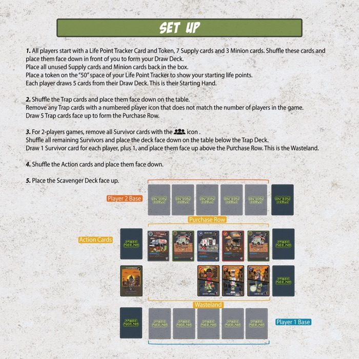
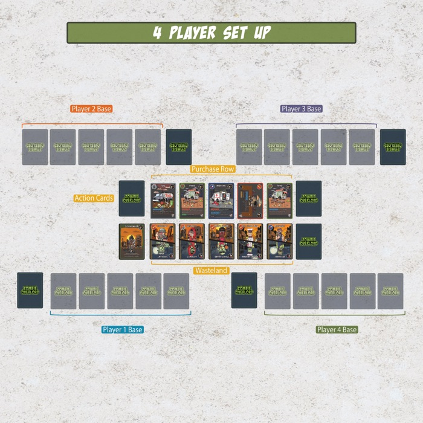
Gameplay sequence
A turn always begins with Start Turn, and always ends with Lure, Clean Up and End Turn, in that order. The three middle phases — Purchase, Action and Attack — may be taken in any order, and you may return to any of them multiple times during your turn.
- Start Turn
- Set all inactive Traps you own to active by turning them upright.
- Purchase
- Use Supply and Scavenger cards from your hand to purchase Trap, Action or Scavenger cards.
- Action
- Play Trap and Action cards from your hand, and use active Trap card abilities.
- Attack
- Send Minion cards from your hand to attack other players. Distribute them however you like.
- Lure
- Survivors in the Wasteland are lured to you if you have the highest corresponding Lure Points.
- Clean Up
- Discard your remaining hand to your Discard Pile, then draw 5 cards.
- End Turn
- Your turn ends and the next player begins.
Player elimination
If a player loses all of their Life Points they are eliminated. Remove every card they own from play — hand, Draw Deck, Discard Pile, Traps and anything else they control — and return it all to the box.
Purchase Phase
Traps are purchased by playing Supply cards from your hand. Add up the total points from the Supply cards you play to get your purchase power. A Trap card shows its cost in the top right.
- All cards you play during the Purchase Phase go to your Discard Pile.
- All purchased cards are placed face up in your Discard Pile.
- Once a Trap leaves the Purchase Row, immediately replace it with the next card from the Trap deck.
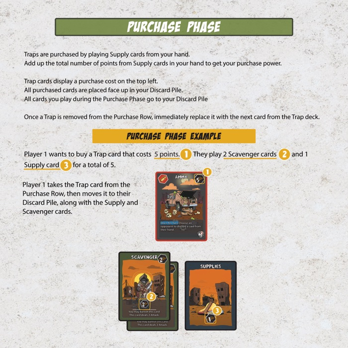
The printed rulebook says the cost is in the top left. On the final cards it is in the top right, as shown above.
Action Phase
Placing Traps
- You may have a maximum of 5 Traps in your base.
- Traps are placed from your hand into any open spot in your base, and are considered active.
- If you already have 5 Traps, you may discard an active Trap to make room for a new one.
- You cannot replace a Trap if you have already used its ability this turn.
Using abilities
- Some Traps have abilities that activate when placed. These must be resolved before placing any additional Traps.
- Traps with Once Per Turn abilities are used during the Action Phase.
- Action cards are also played and resolved during the Action Phase.
Attack Phase
Attacking
Minions are used to attack other players. You may attack any player's life points directly, or any Trap card. A single Minion cannot attack more than one target, but Minions can be grouped together to increase the attack points inflicted on a single target.
Destroying
You may target another player's Traps to destroy or deactivate them. To destroy a Trap you must have attack points equal to or greater than the Trap's Defense. The larger white number on the bottom right of a Trap card is the attack needed to destroy it. You can combine Minions against a single Trap. Destroyed Traps go to the owner's Discard Pile.
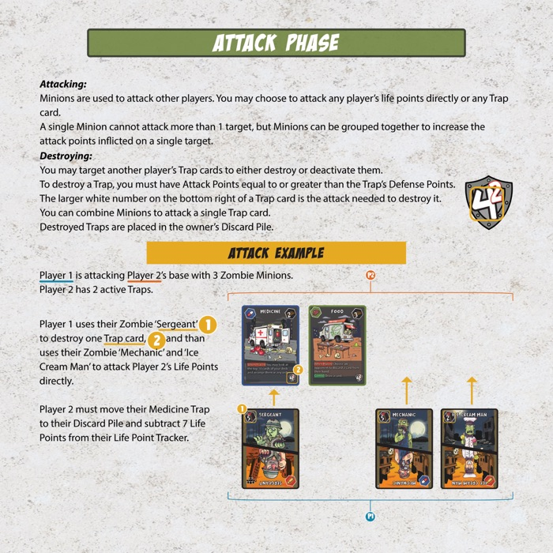
Deactivating Traps
To deactivate a Trap you must have attack points equal to or greater than the smaller red number on the bottom right of the card. The Trap is rotated sideways to show it is inactive, and stays that way until the start of its owner's next turn.
- Inactive Traps are ignored during the Lure Phase.
- You cannot use a Trap card's abilities while it is inactive.
- Inactive Traps still require their full Defense — the larger white number — to be destroyed.
The point of destroying or deactivating another player's Traps is to make sure you gain more Survivors during the Lure Phase.
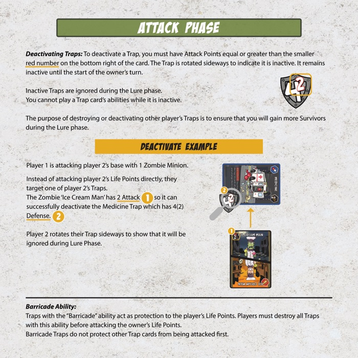
Barricade
Traps with the Barricade ability protect their owner's life points — even while inactive. Opponents must destroy every Barricade before they can attack that player's life points directly. Barricades do not protect the player's other Traps.
Lure Phase
All players add up their matching Lure Points from their active Traps. Each Trap counts as 1 Lure Point.
- If the current player has the highest matching Lure Type for one or more Survivors in the Wasteland, they lure those Survivors into their Discard Pile.
- Only the current player can lure Survivors during the Lure Phase.
- If there is a tie for the highest Lure Points, that Survivor stays in the Wasteland.
- Survivors with two Lure types are lured only if the current player has the highest combined total of both types.
Once no more Survivors can be lured, replace all the ones that were taken — that ends the Lure Phase. Survivors lured before the Lure Phase, through Action cards or Trap abilities, are not replaced until the end of it.
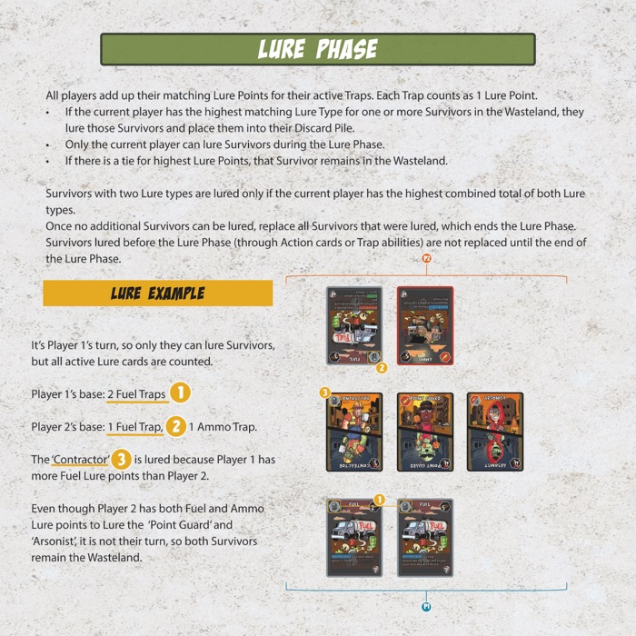
Clean Up Phase
Discard all remaining cards from your hand into your Discard Pile, then draw 5 new cards.
If you run out of cards in your Draw Deck while drawing, shuffle your Discard Pile and place it face down to form a new Draw Deck. Keep drawing until you have a full hand of 5.
Example
After discarding your hand you have 2 cards left in your Draw Deck. Draw those 2, shuffle your Discard Pile into a new Draw Deck, then draw 3 more to reach a hand of 5.
Card types
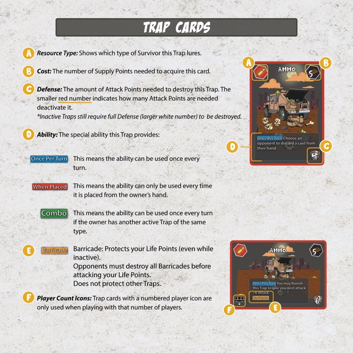
Trap cards
- Resource type (top left). Which type of Survivor the Trap lures. The coloured corners, top left and bottom right, show the type.
- Cost (top right). The Supply Points needed to acquire the card.
- Defense (bottom right). The larger white number is the attack needed to destroy the Trap; the smaller red number is what's needed to deactivate it instead.
- Ability. The special ability the Trap provides.
- Player count icon (bottom left). Traps with a numbered player icon are only used when playing with that number of players.
Ability keywords
- Once Per Turn
- The ability can be used once every turn.
- When Placed
- The ability is used each time the Trap is placed from its owner's hand.
- Combo
- The ability can be used once every turn if the owner has another active Trap of the same type.
- Barricade
- Protects the owner's life points, even while inactive.
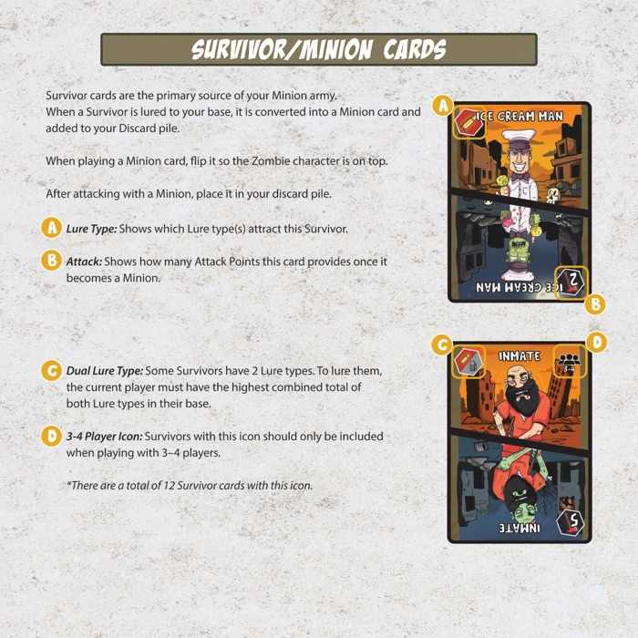
Survivor / Minion cards
Survivors are the primary source of your Minion army. When a Survivor is lured to your base it is converted into a Minion and added to your Discard Pile. When you play a Minion, flip it so the Zombie character is on top. After attacking, place it in your Discard Pile.
- Lure type. Which Lure type or types attract this Survivor.
- Attack. The attack points the card provides once it becomes a Minion.
- Dual lure type. Some Survivors have two. To lure them you need the highest combined total of both types in your base.
- 3–4 player icon. Only include these when playing with 3 or 4 players. There are 12 Survivors with this icon.
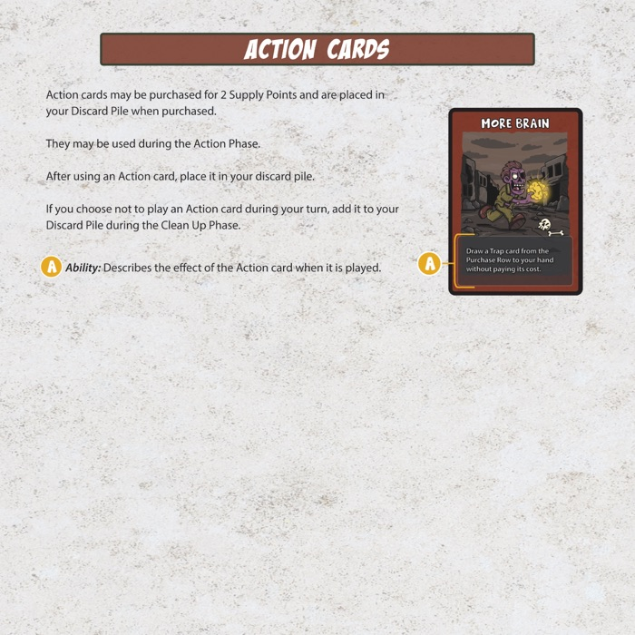
Action cards
Action cards cost 2 Supply Points and go to your Discard Pile when purchased. They are played during the Action Phase, and return to your Discard Pile after use. If you choose not to play one on your turn, it goes to the Discard Pile during Clean Up.
- Ability. What the card does when played.
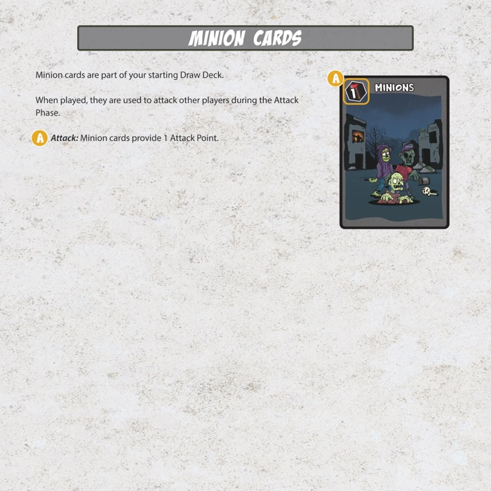
Minion cards
Minions are part of your starting Draw Deck. When played, they attack other players during the Attack Phase.
- Attack. Minion cards provide 1 attack point.
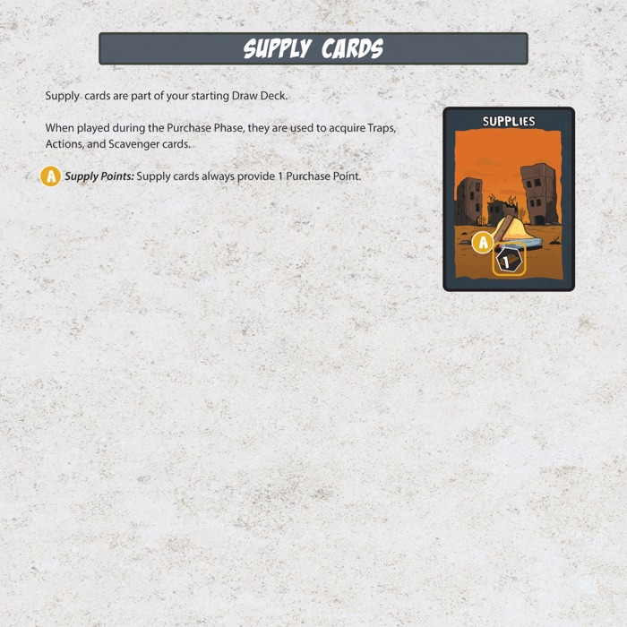
Supply cards
Supply cards are part of your starting Draw Deck. Played during the Purchase Phase, they buy Traps, Action cards and Scavengers.
- Supply Points. Supply cards always provide 1 purchase point.
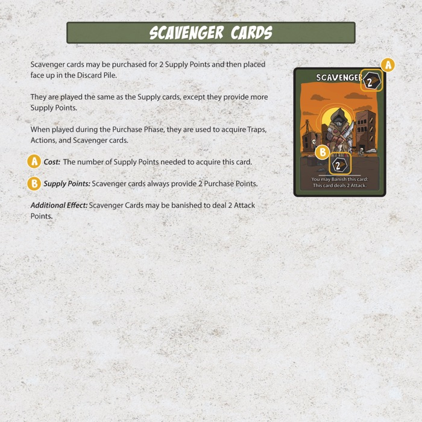
Scavenger cards
Scavengers cost 2 Supply Points and are placed face up in your Discard Pile when purchased. They play like Supply cards but are worth more.
- Cost. The Supply Points needed to acquire the card.
- Supply Points. Scavengers always provide 2 purchase points.
- Additional effect. A Scavenger may be banished to deal 2 attack points.
Playing with the Misfits Mini Expansion
The core game has 68 Survivor cards covering 48 unique characters — 20 of them appear twice. The Misfits Mini Expansion adds 20 new characters, which brings the roster to 68 unique.
The 20 duplicated Survivors are marked with a small white marker in the top right corner. Swap those out for the expansion's 20 and your deck stays the same size, with no repeats. The expansion ships with its own full rules for swapping, but a straight 20-for-20 swap is the recommended way to play.
This isn't in the printed rulebook, because not everyone has the expansion.
Glossary
- Active Trap
- A Trap that is upright and able to use its abilities. Active Traps also contribute their Lure Points during the Lure Phase.
- Banish
- A banished card goes to the Banish Pile. Banished cards are permanently removed from the game and cannot return.
- Base
- The area in front of a player where their active and inactive Traps are placed.
- Converted
- When a Survivor is successfully lured it becomes a Minion. Converted Survivors are flipped so the Minion side, with its attack strength, is on top.
- Destroy
- A destroyed Trap is placed face up in its owner's Discard Pile.
- Discard
- A discarded card is placed face up into its owner's Discard Pile.
- Empty decks
- If the Trap deck or Survivor deck runs out, play continues normally. No further Traps or Survivors are added once those decks are empty.
- Lured
- When a player has the highest matching Lure type for a Survivor in the Wasteland and takes it, converting it to a Minion and placing it face up in their Discard Pile.
- Lure type / Lure Points
- Shown on Survivors as a top-left icon, and on Traps as the coloured top-left and bottom-right corners. There are four: Ammo, Fuel, Food and Medicine. Used during the Lure Phase to determine which Survivors the current player attracts.
- Purchase Points
- The total Supply Points from the Supply and Scavenger cards a player plays during the Purchase Phase.
- Random card
- To draw a random card from a hand, the player shuffles their hand and selects one at random.
Credits
- Game design & development
- Erick Quintanilla
- Artwork
- Maximiliano Musso — Chino the Goat
- Special thanks
- Megan Quintanilla · Andres Luna · David Quintanilla · Andrew Smith · Gabe Cruz
Overlords
Founding supporters who helped bring Zombie Overlord to life.
- Alex Kian
- Dave and Deanne Fisher
- Dory Alvarenga
- Emanuel Fuentes
- Jacob Simper
- Jameson Miller
- José Miguel Narciso Marques
- Keith Ono
- Mathew Pannell
- Matt Goodwin
- Michael Bryant
- Norman E Wirth
- Tahnee Copeland
Designed and published by Rising Warrior Games LLC, Chattanooga, Tennessee.
Zombie Overlord is open for preorder, with fulfillment beginning November 2026.